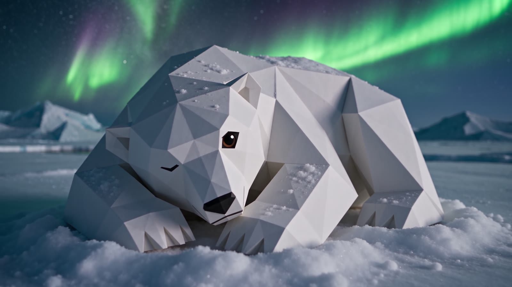
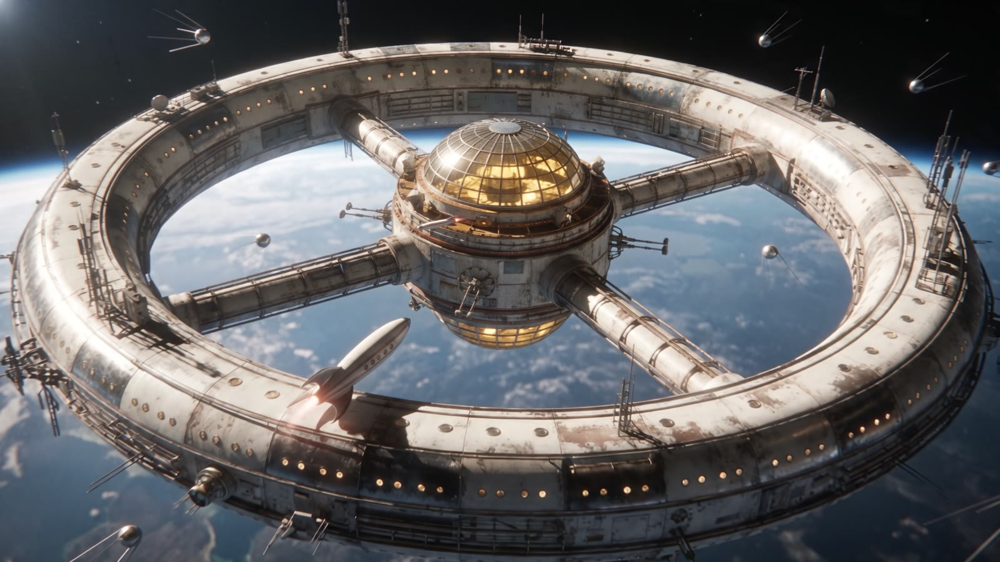

Кадры, которые невозможно снять на камеру
Режиссура человека, кадры нейросети. Музыкальные клипы и визуал для артистов с постановкой, светом и масштабом большого кино.
Режиссура человека, кадры нейросети. Музыкальные клипы и визуал для артистов с постановкой, светом и масштабом большого кино.
01 — Сцены

Закат над тропойСвет · камера

Гора-медведьМасштаб · физика

Маковое полеСвет · цвет

Туман, белый как медведьФизика · образ

Бумажная АрктикаСтиль · свет

Ось мираПерсонажи · стиль

Машина земной осиРетрофутуризм

Кит подо льдомМасштаб · камера

Орбитальное кольцоМиры · масштаб
02 — Подход
Сценарий, герои, ритм и вкус — решения режиссёра. Нейросеть не придумывает клип за нас.
Свет, камера, композиция и цвет выстраиваются так же, как на съёмочной площадке.
Северное сияние, кит подо льдом, гора-медведь — то, что невозможно снять, становится возможным.
03 — Процесс
Слушаем песню, изучаем артиста, предлагаем историю.
Раскадровка под музыку: весь фильм виден до первого кадра.
Герои, миры и липсинк. Сотни ИИ-генераций, в фильм попадают лучшие.
Склейки в долю, цветокоррекция, титры, вертикальные версии.
04 — Контакты

© 2026 AKM StudiosAI Cinema & Music Video Production